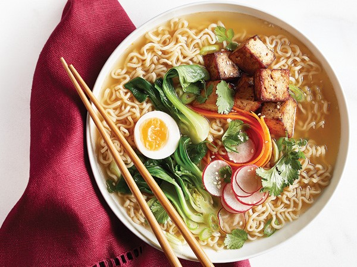

Ramen

Description
A Japanese noodle soup consisting of a soup base, pork, eggs and vegetables
Ingredients
- 4 cups pork broth
- 6 oz ramen noodles
- 2 eggs
- green onions
- 1 lb chashu pork belly
- 1 cup miso tare
Steps
- Prepare ingredients
- Boil the ramen noodles
- Fry chashu pork until lightly browned
- Place tare in bowl
- Ladle in pork broth and stir to mix
- Add the noodles and pour in more broth
- Top with egg, pork and green onions